Chapter 10 Support Vector Machines
- Here we approach the two-class classification problem in a direct way:
We try and find a plane that separates the classes in feature space.
- If we cannot, we get creative in two ways:
- We soften what we mean by “separates”, and
- We enrich and enlarge the feature space so that separation is possible.
What is a Hyperplane?
A hyperplane in \(p\) dimensions is a flat affine subspace of dimension \(p-1\).
In general the equation for a hyperplane has the form
\[ \beta_0+\beta_1X_1 +\beta_2X_2 +\cdots +\beta_pX_p=0 \]
In \(p=2\) dimensions a hyperplane is a line.
If \(\beta_0=0\), the hyperplane goes through the origin, otherwise not.
The vecctor \(\beta=(\beta_1,\beta_2, \cdots, \beta_p)\) is called the normal vector - it points in a direction orthogonal to the surface of a hyperplane.
Hyperplane in 2 dimensions
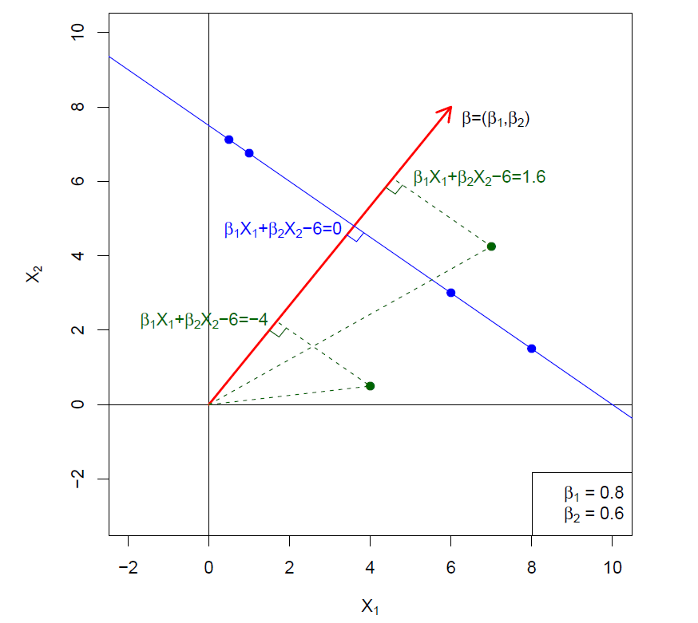
- The hyperplane \(1+2x_1+3x_2=0\) divides the \(xy\)-plane in which \(1+2x_1+3x_2>0\) is indicated by green points and \(1+2x_1+3x_2<0\) by red points.
plot(NULL, type = "n", xlim = c(-2, 2), ylim = c(-2, 2),
xlab = bquote(x[1]), ylab = bquote(x[2]),
main = expression(paste("Affine hyperplane: 1 + 2", x[1], " + 3", x[2], " = 0", sep = "")))
## add line
abline(a = -1/3, b = -2/3)
## points
x1 <- x2 <- seq(from = -2, to = 2, length = 40)
for (i in 1:length(x1)) {
x <- rep(x1[i], times = length(x1))
points(x = x, y = x2, pch = 20, cex = .5,
col = ifelse(1 + 2*x + 3*x2 > 0, "green", "red"))
}
points(x = 1, y = 1, pch = 20, col = "blue")
text(x = 1, y = 1, labels = "(1, 1)", cex = .9, col = "blue", pos = 4)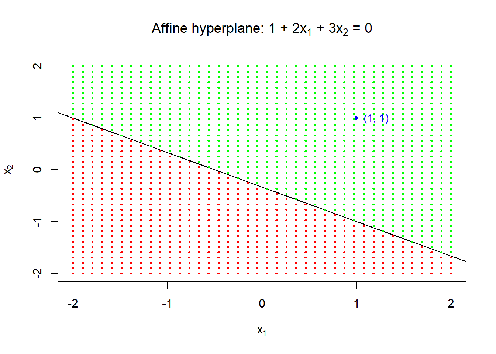
Separating hyperplanes
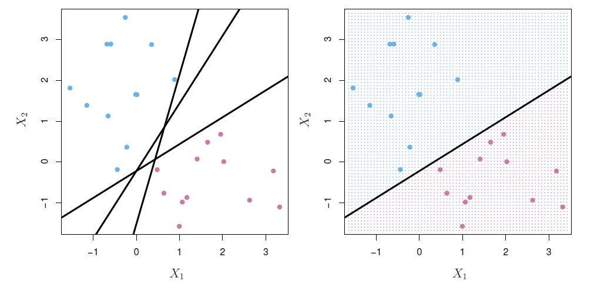
If \(f(X)=\beta_0+\beta_1X_1 +\beta_2X_2 +\cdots +\beta_pX_p\), then \(f(X)>0\) for points on one side of the hyperplane, and \(f(X)<0\) for points on the other.
If we code the colored points as \(Y_i=+1\) for blue, say, and \(Y_i=-1\) for mauve, then if $Y_if(X_i)>0 for all \(i\), \(f(X)=0\) defines a separating hyperplane.
Maximal margin classifier
- Among all separating hyperplanes, find the one that makes the biggest gap or margin between the two classes.
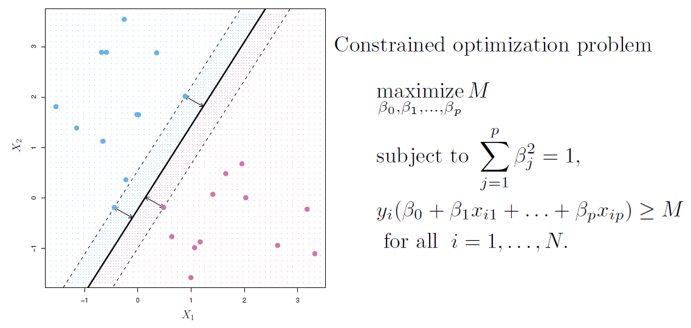
- This can be rephrased as a convex quadratic program, and solved efficiently.
- The function svm() in package e1071 solves this problem efficiently.
Noisy data

- Sometimes the data are separable, but noisy.
- This can lead to a poor solution for the maximal-margin classifier.
- The support vector classifier maximizes a soft margin.
Example
R livrary e1071 contains svm() function to perform support vector machines and a number of other methods.
To illustrate the support vector classifier, consider simulated data generated from \(N(\mu_i, \Sigma)\), \(i=1,2\), with \(\mu_1=(0,0)'\), \(\mu_2=(1,1)'\), and \(\Sigma=I_2\), a \(2\times 2\) identity matrix.
set.seed(1) # for exact replication
x <- matrix(rnorm(n = 20 * 2), ncol = 2) # two bivariate standard normal variates
y <- c(rep(-1, times = 10), rep(1, times = 10)) # class identifiers -1 and +1
x[y == 1, ] <- x[y == 1, ] + 1 # set the mean of the second to mu = (1, 1)
data <- data.frame(x = x, y = as.factor(y)) # data frame for svm
colnames(data) <- c("x1", "x2", "y") # ccolumn names
head(data) ## x1 x2 y
## 1 -0.6264538 0.91897737 -1
## 2 0.1836433 0.78213630 -1
## 3 -0.8356286 0.07456498 -1
## 4 1.5952808 -1.98935170 -1
## 5 0.3295078 0.61982575 -1
## 6 -0.8204684 -0.05612874 -1plot(x = data$x2, y = data$x1, pch = 20, xlab = expression(x[2]), ylab = expression(x[1]),
col = ifelse(y == -1, "blue", "red"), # blue for group -1 and red for +1
main = "Two normal populations")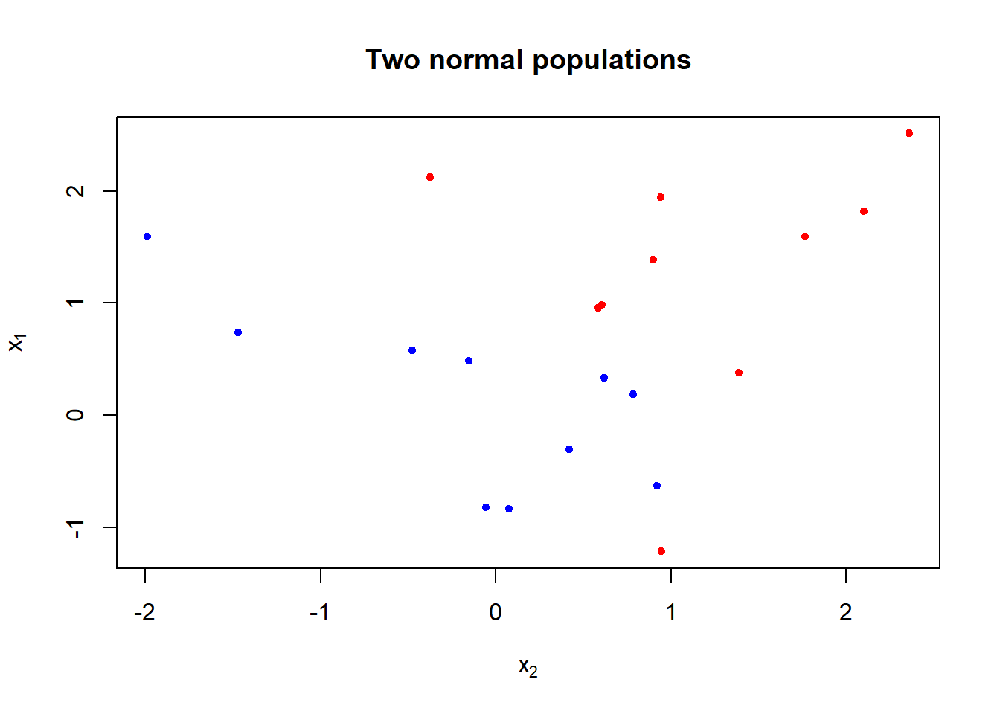
- The figure shows that the classes are not linearly separable.
## install.packages("e1071", repos = "https://cran.uib.no")
library(e1071)
#library(help = e1071) # a brief description of the methods
svmfit <- svm(y ~ ., data = data,
kernel = "linear", # svm with kernel "linear" produces sv classifier
cost = 10, # this is related to C in equation (13)
scale = FALSE # here no need to scale predictors
) # svm
plot(svmfit, data = data, formula = x2 ~ x1) # (see help(plot.svm)),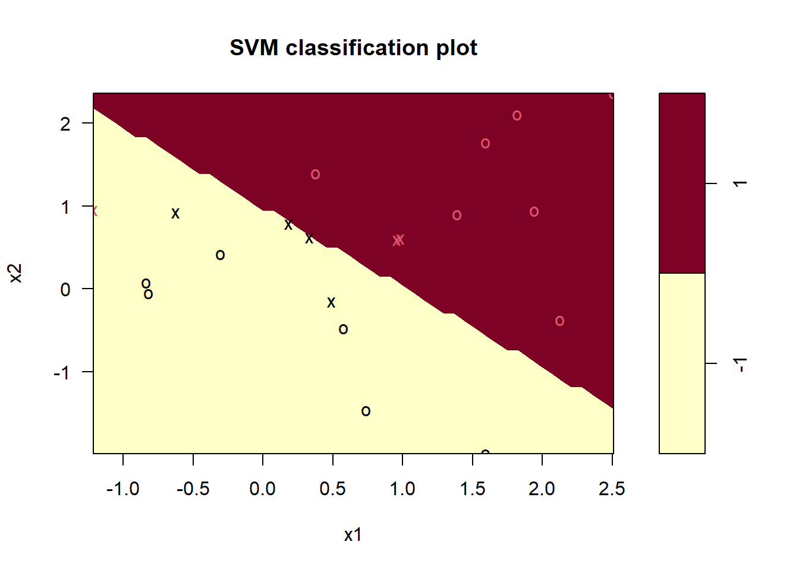
## by default x1 is on the vertical axis, using formula = x2 ~ x1 changes the axes
## help(plot.svm)
## dev.print(pdf, file = "../lectures/figures/ex82b.pdf")
svmfit$index # print support vector indexes## [1] 1 2 5 7 14 16 17The decision boundary is liner (although appears jigged).
The seven support vectors here are indicated by crosses.
Due to the linearity one training observation becomes misclassified.
summary(svmfit) # some summary##
## Call:
## svm(formula = y ~ ., data = data, kernel = "linear", cost = 10, scale = FALSE)
##
##
## Parameters:
## SVM-Type: C-classification
## SVM-Kernel: linear
## cost: 10
##
## Number of Support Vectors: 7
##
## ( 4 3 )
##
##
## Number of Classes: 2
##
## Levels:
## -1 1round(coef(svmfit), 3) # coefficients of the linear decision boundary## (Intercept) x1 x2
## 1.507 -1.556 -1.612The tune() can be used for (10-fold) cross-validation.
The function needs a range for the cost parameter.
set.seed(1) # for exact replication
## help(tune)
tune.out <- tune(svm, # function to be tuned
y~., data = data, # formula expression alternative
kernel = "linear", # SV classifier
ranges = list(cost = c(.001, .01, .1, 1, 5, 10, 100))
)
summary(tune.out) # Cross-validation results##
## Parameter tuning of 'svm':
##
## - sampling method: 10-fold cross validation
##
## - best parameters:
## cost
## 0.1
##
## - best performance: 0.05
##
## - Detailed performance results:
## cost error dispersion
## 1 1e-03 0.55 0.4377975
## 2 1e-02 0.55 0.4377975
## 3 1e-01 0.05 0.1581139
## 4 1e+00 0.15 0.2415229
## 5 5e+00 0.15 0.2415229
## 6 1e+01 0.15 0.2415229
## 7 1e+02 0.15 0.2415229Cost=0.1 results the lowest cross-validation error.
The tune() function sotres the best model.
bestmod <- tune.out$best.model # extract the best model.
summary(bestmod)##
## Call:
## best.tune(method = svm, train.x = y ~ ., data = data, ranges = list(cost = c(0.001,
## 0.01, 0.1, 1, 5, 10, 100)), kernel = "linear")
##
##
## Parameters:
## SVM-Type: C-classification
## SVM-Kernel: linear
## cost: 0.1
##
## Number of Support Vectors: 16
##
## ( 8 8 )
##
##
## Number of Classes: 2
##
## Levels:
## -1 1round(coef(bestmod), 3) # coefficients best separating linear decision boundary## (Intercept) x1 x2
## 0.061 -0.516 -0.532plot(bestmod, data = data)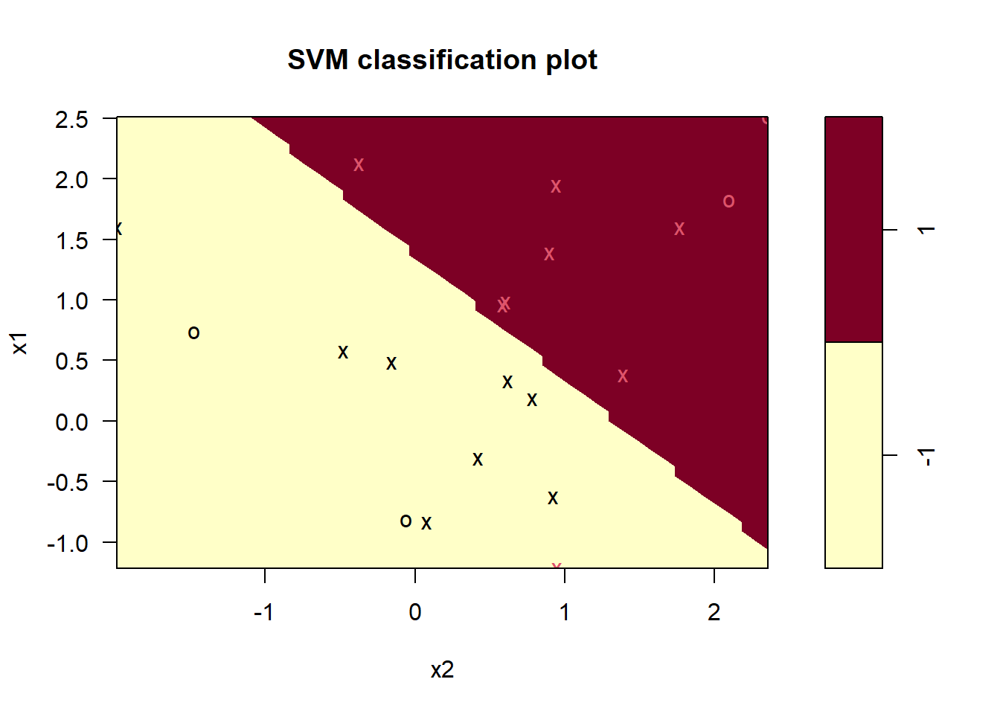
The predict() function can be used to predict the class labels at any given value of the cost parameter.
Generate test observations and produce predictions.
xtest <- matrix(rnorm(20 * 2), ncol = 2) # test observatons.
ytest <- sample(c(-1, 1), size = 20, replace = TRUE) # randomly assigned groups
xtest[ytest == 1, ] <- xtest[ytest == 1, ] + 1 # class means of class 1 observations
testdata <- data.frame(x = xtest, y = as.factor(ytest)) # test data frame
colnames(testdata) <- c("x1", "x2", "y") # test data need to have correct var names
ypred <- predict(bestmod, testdata) # predictions
table(predicted = ypred, realized = testdata$y) # predictions vs true observed## realized
## predicted -1 1
## -1 9 1
## 1 2 8## 3 out of 20 are misclassified- With cost=0.1, 19 out of the 20 observations become correctly classified.
Feature expansion
Enlarge the space of features by including transformation; e.g. \(X_1^2, X_1^3, X_1X_2, X_1X_2^2, \ldots\)
- Hence go from a \(p\)-dimensional space to a \(M>p\) dimensional space.
Fit a support-vector classifier in the enlarged space.
This results in non-linear decision boundaries in the original space.
Example
- Suppose we use (\(X_1, X_2, X_1^2, X_2^2, X_1X_2\)) instead of just (\(X_1, X_2\)).
- Then the decision boundary would be of the form
\[ \beta_0+\beta_1X_1+\beta_2X_2+\beta_3X_1^2+\beta_4X_2^2+\beta_5X_1X_2=0 \]
- This leads to nonlinear decision boundaries in the original space (quadratic conic sections).
Cubic polynomials
Here we use a basis expansion of cubic polynomials.
From 2 variables to 9.
The support-vector classifier in the enlarged space solves the problem in the lower-dimensional space
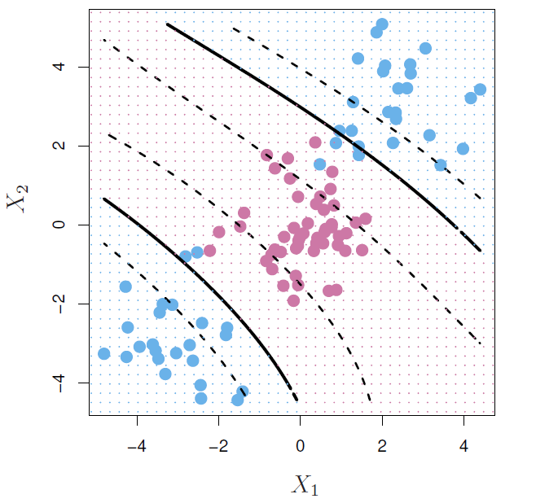
\[ \beta_0+\beta_1X_1+\beta_2X_2+\beta_3X_1^2+\beta_4X_2^2+\beta_5X_1X_2+\beta_6X_1^3+\beta_7X_2^3+\beta_8X_1X_2^2+\beta_9X_1^2X_2=0 \] #### Nonlinearities and kernels {-}
Polynomials (especially high-dimensional ones) get wild rather fast.
There is a more elegant and controlled way to introduce nonlinearities in support-vector classifiers - through the use of kernels.
Before we discuss these, we must understand the role of inner products in support-vector classifiers.
Inner products and support vectors
- Inner product between vectors
\[ <x_i,x_i'>=\sum_{j=1}^p x_{ij}x_{i'j} \]
- The linear support vector classifier can be represented as (\(n\) parameters)
\[ f(x)=\beta_0+\sum_{i=1}^n \alpha_i <x_i,x_i'> \]
To estimate the parameters \(\alpha_1,\ldots, \alpha_n\) and \(\beta_0\), all we need are the \(\binom{n}{2}\) inner products \(<x_i,x_i'>\) between all pairs of training observations.
It turns out that most of the \(\hat{\alpha}_i\) can be zero:
\[ f(x)=\beta_0+\sum_{i\in S}\hat{\alpha}<x_i,x_i'> \] - \(S\) is the support set of indices \(i\) such that \(\hat{\alpha}_i>0\)
Kernels and support vector machines
If we can compute inner-products between observations, we can fit a SV classifier.
Some special kernel functions can do this for us. E.g.
\[ K(x_i,x_i')=(1+\sum_{j=1}^p x_{ij}x_{i'j})^d \] computes the inner-products needed for \(d\) dimensional polynomials - \(\binom{p+d}{d}\) basis function!
- The solution has the form
\[ f(x)=\beta_0+\sum_{i\in S} \hat{\alpha}_i K(x,x_i) \]
Example: Heart data
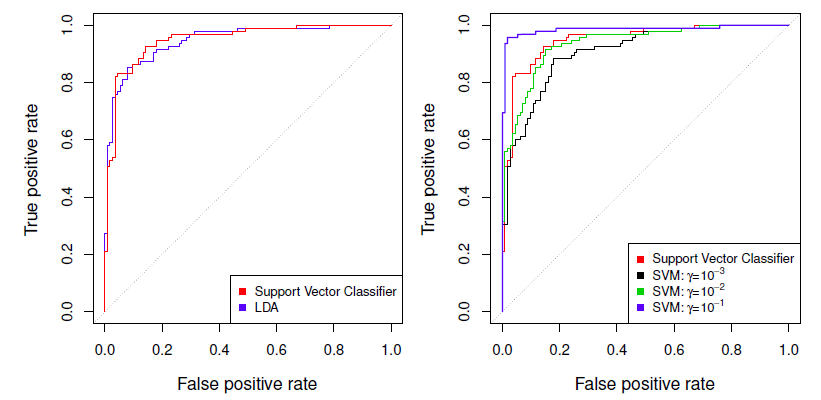
ROC curve is obtained by changing the threshold 0 to threshold \(t\) \(\hat{f}(X)>t\), and recording false positive and true positive rates as \(t\) varies.
Here we see ROC curves on training data.
Example: Heart test data
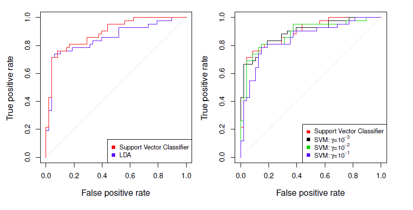
Example
- Generate bivariate normal with class 1 \(\mu=(2,2)'\) or \(\mu_1=(-2,-2)'\) and class 2 \(\mu_2=(0,0)'\)
library(e1071)
set.seed(1) # for exact replication
x <- matrix(rnorm(n = 200 * 2), ncol = 2) # bivariate normal
x[1:100, ] <- x[1:100, ] + 2 # shift mean of the first 100 obs
x[101:150, ] <- x[101:150, ] - 2 # nex 50 obs mean -2 (bot cols)
## the rest of bothe variables (x1 and x2) have means zero
y <- c(rep(1, times = 150), rep(2, times = 50))
data <- data.frame(x = x, y = as.factor(y))
colnames(data) <- c("x1", "x2", "y")
head(data)## x1 x2 y
## 1 1.373546 2.4094018 1
## 2 2.183643 3.6888733 1
## 3 1.164371 3.5865884 1
## 4 3.595281 1.6690922 1
## 5 2.329508 -0.2852355 1
## 6 1.179532 4.4976616 1plot(x = x[, 2], y = x[, 1],
col = ifelse(y == 1, "red", "blue"), pch = 20,
xlab = expression(x[2]), ylab = expression(x[1]),
main = "Non-linearly Separating Classes")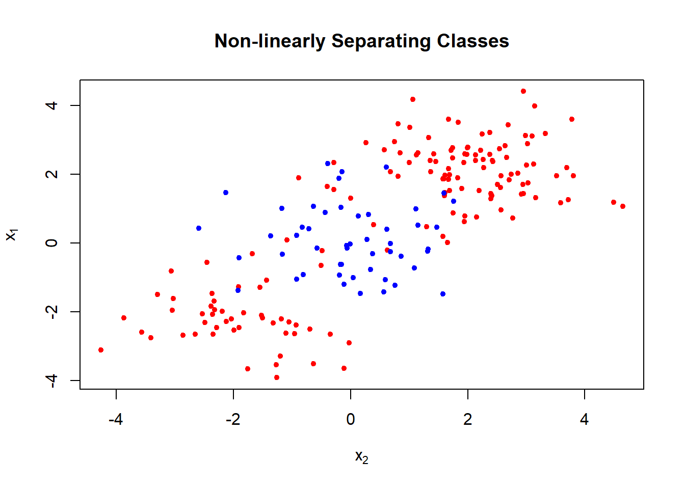
Split data randomly to training and test sets.
Fitting SVM with gamma=1 to the training set gives the following results.
train <- sample(x = 200, size = 100) # taining observations
svmfit <- svm(y ~ ., data = data[train, ], kernel = "radial", gamma = 1, cost = 1)
plot(svmfit, data[train, ])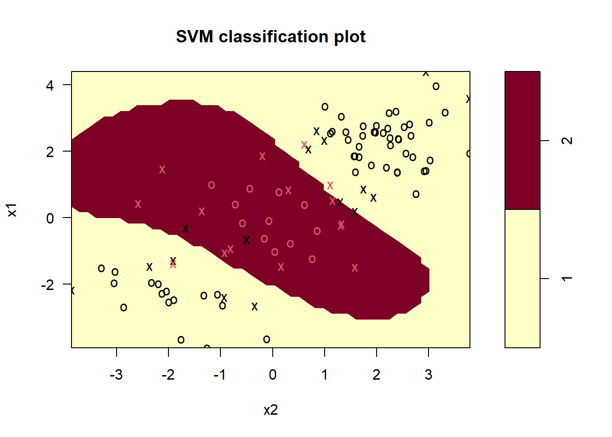
- The decision boundary is highly non-linear.
## summary of results
summary(svmfit)##
## Call:
## svm(formula = y ~ ., data = data[train, ], kernel = "radial", gamma = 1,
## cost = 1)
##
##
## Parameters:
## SVM-Type: C-classification
## SVM-Kernel: radial
## cost: 1
##
## Number of Support Vectors: 31
##
## ( 16 15 )
##
##
## Number of Classes: 2
##
## Levels:
## 1 2- We can use CV to find best fitting gamma(\(\gamma\)) and cost.
set.seed(1) # for exact replication
tune.out <- tune(svm, y ~ ., data = data[train, ], kernel = "radial",
ranges = list(cost = c(0.1, 1, 10, 100, 1000),
gamma = c(0.5, 1, 2, 3, 4)))
summary(tune.out) # cross-validataion results##
## Parameter tuning of 'svm':
##
## - sampling method: 10-fold cross validation
##
## - best parameters:
## cost gamma
## 1 0.5
##
## - best performance: 0.07
##
## - Detailed performance results:
## cost gamma error dispersion
## 1 1e-01 0.5 0.26 0.15776213
## 2 1e+00 0.5 0.07 0.08232726
## 3 1e+01 0.5 0.07 0.08232726
## 4 1e+02 0.5 0.14 0.15055453
## 5 1e+03 0.5 0.11 0.07378648
## 6 1e-01 1.0 0.22 0.16193277
## 7 1e+00 1.0 0.07 0.08232726
## 8 1e+01 1.0 0.09 0.07378648
## 9 1e+02 1.0 0.12 0.12292726
## 10 1e+03 1.0 0.11 0.11005049
## 11 1e-01 2.0 0.27 0.15670212
## 12 1e+00 2.0 0.07 0.08232726
## 13 1e+01 2.0 0.11 0.07378648
## 14 1e+02 2.0 0.12 0.13165612
## 15 1e+03 2.0 0.16 0.13498971
## 16 1e-01 3.0 0.27 0.15670212
## 17 1e+00 3.0 0.07 0.08232726
## 18 1e+01 3.0 0.08 0.07888106
## 19 1e+02 3.0 0.13 0.14181365
## 20 1e+03 3.0 0.15 0.13540064
## 21 1e-01 4.0 0.27 0.15670212
## 22 1e+00 4.0 0.07 0.08232726
## 23 1e+01 4.0 0.09 0.07378648
## 24 1e+02 4.0 0.13 0.14181365
## 25 1e+03 4.0 0.15 0.13540064The best choice is cost=1 and gamma=2.
Using these values in the test set we get
## test set results
table(true = data[-train, "y"], pred = predict(tune.out$best.model, newx = data[-train, ]))## pred
## true 1 2
## 1 54 23
## 2 17 639 out of 100 become misclassified.
Let us next produce ROC curves for the classifier.
R has a package, ROCR, for the purpose.
SVMs and support vector classifiers output class labels for each observation.
However, it is also possible to obtain fitted values for each observation that are produced.
svm() produces fitted values when setting the parameter decision.values=TRUE in the function call.
## ROC curves
#install.packages("ROCR", repos = "https://cran.uib.no")
library(ROCR)
## library(help = ROCR)
## fit svm with optimal gamma and cost, and produce also decison values
svmfit.opt <- svm(y ~ ., data = data[train, ], kernel = "radial",
gamma = 2, cost = 1, decision.values = TRUE)
fitted <- attributes(predict(svmfit.opt, newdata = data[train, ],
decision.values = TRUE))$decision.values
head(fitted)## 1/2
## 148 1.130044
## 192 -1.038648
## 87 1.188065
## 20 1.204742
## 112 1.195899
## 177 -1.096820# help(performance)
## help(prediction)
par(mfrow = c(1, 2))
## training ROC plot
perf <- performance(prediction(fitted, labels = data[train, "y"]),
"tpr", # true positive rate
"fpr" # false positive rate
) # training perform
plot(perf, col = "blue", main = "Training Data")
## add ROC plot for a more flexible fit
svmfit.flex <- svm(y ~ ., data = data[train, ], kernel = "radial",
gamma = 50, cost = 1, decision.values = TRUE)
fitted <- attributes(predict(svmfit.flex, newdata = data[train, ],
decision.values = TRUE))$decision.values
perf <- performance(prediction(fitted, labels = data[train, "y"]),
"tpr", # true positive rate
"fpr" # false positive rate
) # training perform
plot(perf, col = "red", add = TRUE)
legend("bottomright", legend = c("Optimal fit", "Flexible"),
lty = 1, col = c("blue", "red"), bty = "n")
## test ROC plot
fitted <- attributes(predict(svmfit.opt, newdata = data[-train, ],
decision.values = TRUE))$decision.values
perf <- performance(prediction(fitted, labels = data[-train, "y"]),
"tpr", # true positive rate
"fpr" # false positive rate
) # training perform
plot(perf, col = "blue", main = "Test Data")
## flexible
fitted <- attributes(predict(svmfit.flex, newdata = data[-train, ],
decision.values = TRUE))$decision.values
perf <- performance(prediction(fitted, labels = data[-train, "y"]),
"tpr", # true positive rate
"fpr" # false positive rate
) # training perform
plot(perf, col = "red", add = TRUE)
legend("bottomright", legend = c("Optimal fit", "Flexible"),
lty = 1, col = c("blue", "red"), bty = "n")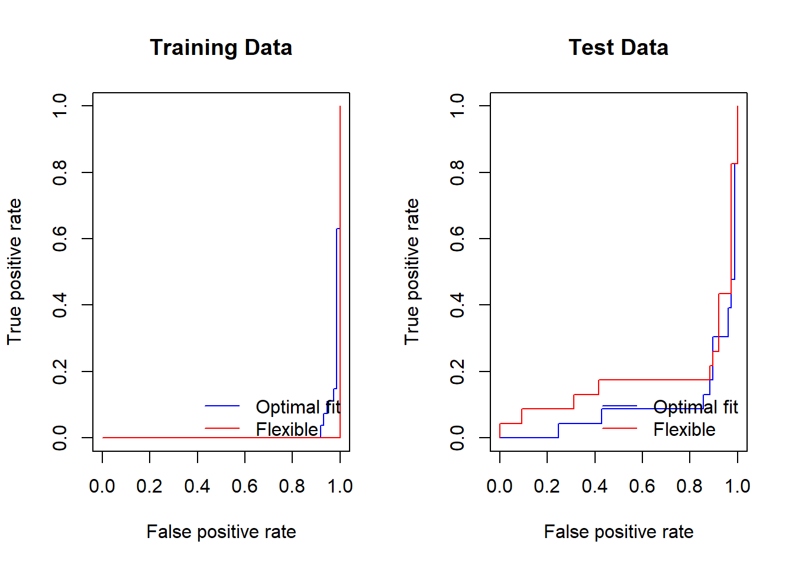
SVMs: more than 2 classes?
The SVM as defined works for \(K=2\) classes.
What do we do if we have \(K>2\) classes?
OVA: One versus All
- Fit \(K\) different 2-class SVM classifiers \(\hat{f}_k(x)\), \(k=1,\ldots, K\); each class versus the rest.
- Classify \(x*\) to the class for which \(\hat{f}_k(x*)\) is largest.
OVO: One versus One
- Fit all \(\binom{K}{2}\) pairwise classifiers $_{kl}(x).
- Classify \(x*\) to the class that wins the most pairwise competitions.
Which to choose?
- If \(K\) is not too large, use OVO.
Support vector versus logistic regression?
- With \(f(X)=\beta_0+\beta_1X_1+\cdots +\beta_pX_o\) can rephrase support-vector classifier optimization as
\[ minimize_{\beta_0,\beta_1,\ldots, \beta_p}\{\sum_{i=1}^n max[0, 1-y_if(x_i)]+\lambda\sum_{ij=1}^p\beta_j^2\} \]
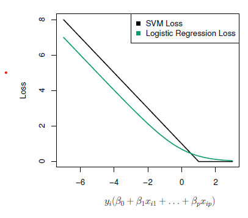
This has the form loss plus penalty.
The loss is known as the hinge loss.
Very similar to “loss” in logistic regression (negative log-likelihood).
Which to use: SVM or logistic regression
When classes are (nearly) separable, SVM does better than LR. So does LDA.
When not, LR (with ridge penalty) and SVM very similar.
If you wish to estimate probabilities, LR is the choice.
For nonlinear boundaries, kernel SVMs are popular.
- Can use kernels with LR and LDA as well, but computations are more expensive.